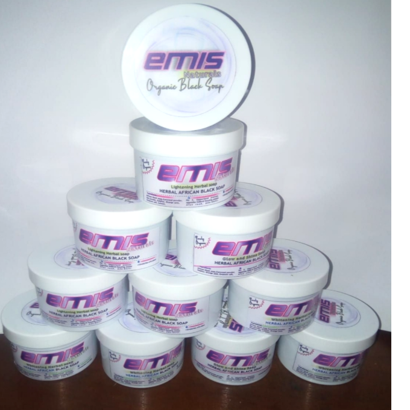
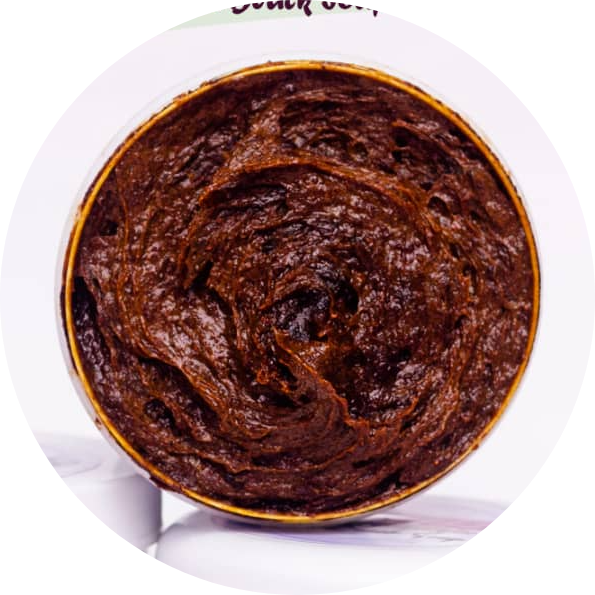
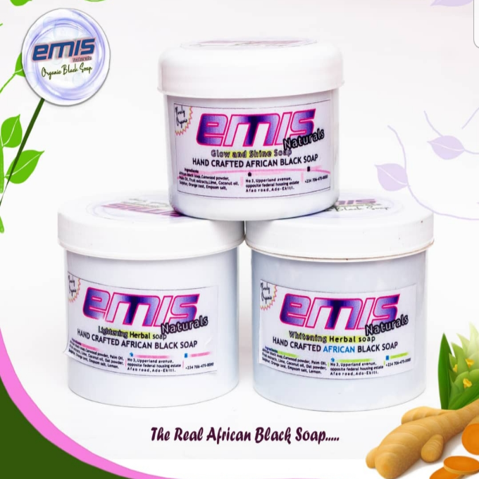
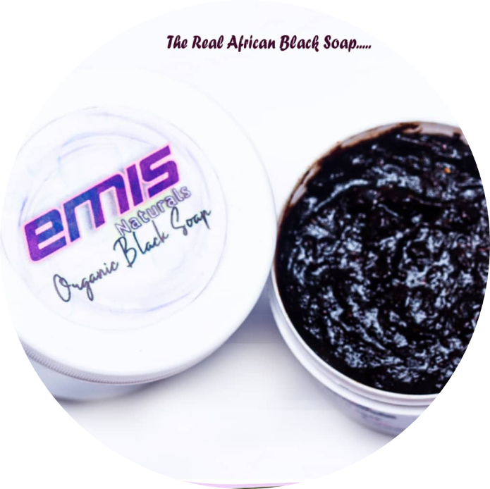

Products
Currently, Emis Naturals skincare brand have about seven (7) different products in all.
- Glow and shine herbal black soap

- Lightening herbal black soap

- Whitening herbal black soap

- Skin glow facial and body scrub

- Sugar facial and body scrub
- Detox face pack
- Rose water
The glow and shine soap was formulated for individuals that want to achieve a flawless skin while retaining or maintain their natural skin tone.
The lightening soap was formulated for those that have a fair complexion that want to improve or maintain their skin tone at the same time. And for those that will like to go half a shade lighter.
The whitening soap was formulated for those that want to achieve a flawless skin while enhancing their skin tone. This soap can give you a shade or a shade and half lighter than your skin tone depending on the sensitivity of the skin.
Skin glow scrub was formulated to exfoliate, brighten and moisturize the skin. The scrub is rich in plant oils and botanical powders that will improve the appearance of the skin over time.
Sugar scrub was formulated to exfoliate the skin. It might not brighten the skin like the skin glow scrub, but it will exfoliate and moisturize the skin. Because of the presence of coffee and sugar in the scrub, it can effectively eliminate cellulite and reduce skin puffiness.
Detox face pack is a combination of earth’s finest clay and botanical powders. It is very rich in vitamin c and antioxidant. It helps to Detox (remove build up of toxins) from the skin to reveal a soft and supple skin. It helps to decongest, exfoliate, detoxify and brighten the skin, thereby improving the overall appearance of the skin.
Rosewater is enriched with vitamins and it is known for its wonderful skincare benefits. Its serves as the solvent for our face pack. The rosewater is missed with the Detox face pack to form a paste to ease application and absorption of the product.